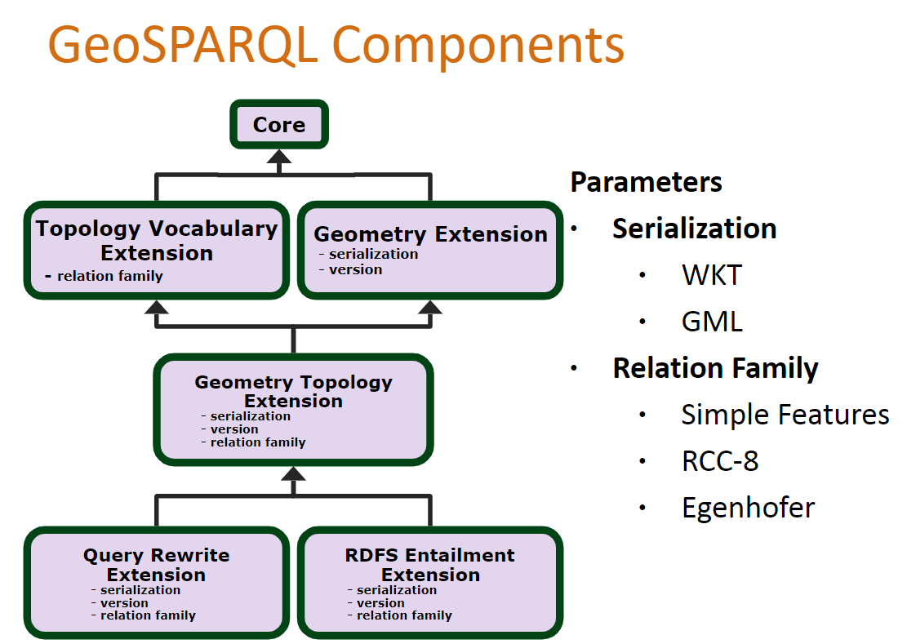
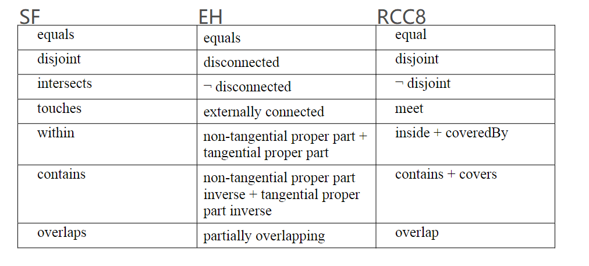
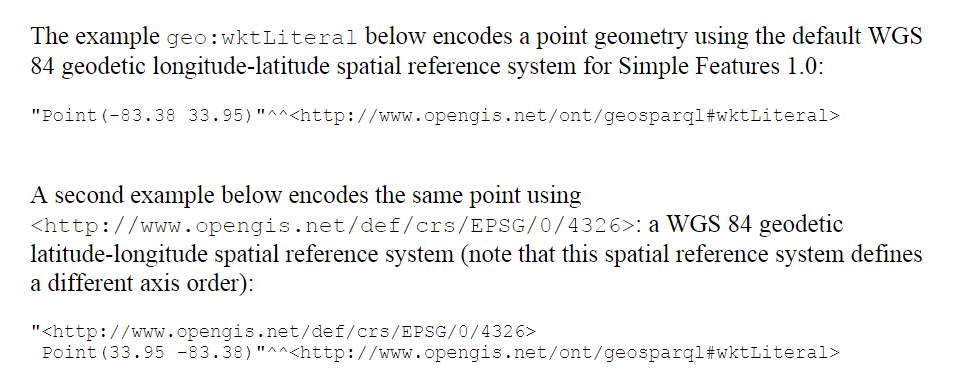
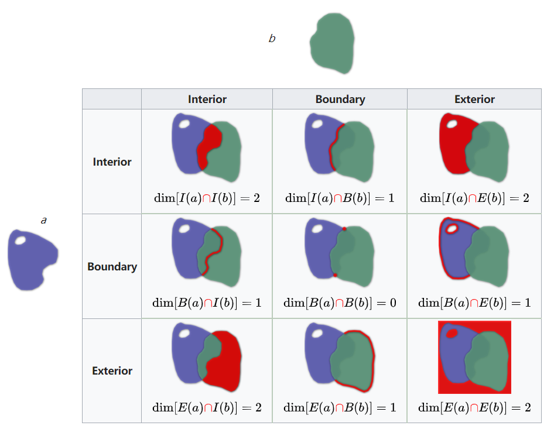

1,595 words in total, 9 minutes required. 图谱实践笔记第三篇：Jena + GeoSPARQL GeoSPARQLGeoSPARQL: A Geographic Query Language for RDF Data; It supports representing and querying geospatial data on the Semantic Web。参见项目主页。 Representing geospatial information is done using high level ontologies inspired from GIS terminology Geometries are represented using literals of spatial datatypes Literals are serialized using OGC standards WKT and GML Families of functions are offered for querying geometries 它是Open Geospatial Consortium (OGC) 的规范，相关的namespace如下： ogc:http://www.opengis.net/ geo:http://www.opengis.net/ont/geosparql# geof:http://www.opengis.net/def/function/geosparql/ geor:http://www.opengis.net/def/rule/geosparql/ sf:http://www.opengis.net/ont/sf# gml:http://www.opengis.net/ont/gml# 一个GeoSPARQL的demo网站： http://www.geosparql.org/。看起来应该是目前OGC主页的前辈。 直接用经纬度来执行12345678910111213PREFIX xsd: <http://www.w3.org/2001/XMLSchema#> PREFIX xsd: <http://www.w3.org/2001/XMLSchema#>PREFIX geo: <http://www.w3.org/2003/01/geo/wgs84_pos#>PREFIX spatial: <http://jena.apache.org/spatial#>PREFIX rdfs: <http://www.w3.org/2000/01/rdf-schema#>SELECT ?objectWHERE {?object geo:lat ?lat.?object geo:long ?long.FILTER((xsd:double(?lat)>=40.73) && (xsd:double(?long)>=-74) && (xsd:double(?lat)<=41) && (xsd:double(?long)<=-73.98))} LIMIT 20 用spatial:nearby来执行12345678910111213141516PREFIX co: <http://www.geonames.org/countries/#>PREFIX xsd: <http://www.w3.org/2001/XMLSchema#>PREFIX geo: <http://www.w3.org/2003/01/geo/wgs84_pos#>PREFIX spatial: <http://jena.apache.org/spatial#>PREFIX rdfs: <http://www.w3.org/2000/01/rdf-schema#>PREFIX gn: <http://www.geonames.org/ontology#>PREFIX foaf:<http://xmlns.com/foaf/0.1/>PREFIX loticoowl:<http://www.lotico.com/ontology/>SELECT ?objectWHERE { ?object spatial:nearby(40.74 -73.989 1 'mi'). ?object rdfs:label ?label} LIMIT 10 GeoSPARQL六大FeatureGeoSPARQL Class Dependency Core defines two top level classes that can be used to organize geospatial data, i.e., geo:SpatialObject and geo:Feature; Topology Vocabulary the extension is used for representing topological information about features. topological information can be derived from geometric information or it might be captured by asserting explicitly the topological relations between features. include: Simple Features Relation Family (geo:sf***); Egenhofer Relation Family (geo:eh***); RCC8 Relation Family (geo:rcc8e***). 三个family的关系的等同性如下图（不同拓扑关系家族的关系等同性）所示. Geometry Extension defines a vocabulary for asserting and querying information about geometry data, and it defines query functions for operating on geometry data. geo:hasGeometry (link a feature with a geometry that represents its spatial extent) geo:dimension (topological dimension of this geometric object, which must be less than or equal to the coordinate dimension) geo:wktLiteral (consist of an optional URI identifying the coordinate reference system followed by Simple Features Well Known Text (WKT) describing a geometric value) 如下图（wktLiteral的示例）所示. 函数 geof:intersection geof:convexHull; geof:distance; geof:envelope(returns the minimum bounding box) Geometry Topology defines a collection of topological query functions that operate on geometry literals 同样包含三个relation family geof:ehEquals(geom1: ogc:geomLiteral, geom2: ogc:geomLiteral): xsd:boolean geof:sfWithin(geom1: ogc:geomLiteral, geom2: ogc:geomLiteral): xsd:boolean geof:sfOverlaps(geom1: ogc:geomLiteral, geom2: ogc:geomLiteral): xsd:boolean RDFS Entailment Extension matching implicitly derived RDF triples in GeoSPARQL queries. Query Rewrite Extension defines a set of RIF rules that use topological extension functions defined in Geometry Topology to establish the existence of direct topological predicates defined in Topology Vocabulary. 不同拓扑关系家族的关系等同性 wktLiteral的示例 最后，推荐一个非常好的教程[2]。 SRS/CRSA spatial reference system (SRS) or coordinate reference system (CRS) is a coordinate-based local, regional or global system used to locate geographical entities. Spatial reference systems can be referred to using a SRID integer, including EPSG codes defined by the International Association of Oil and Gas Producers. SRID是用于区分不同的坐标系系统的，例如UTM, Zone 17N, NAD27 — SRID 2029； WGS84 — SRID 4326。 The GeoSPARQL standard specifies that WKT Geometry Literals without an SRS URI are defaulted to CRS84 (WGS84) http://www.opengis.net/def/crs/OGC/1.3/CRS84. DE-9IMThe Dimensionally Extended nine-Intersection Model (DE-9IM) is a topological model and a standard used to describe the spatial relations of two regions[1]。 DE-9IM 为了表示spatial predicate，可以将dim的定义转换为TRUE和FALSE，用于描述两个Geometry的关系。 Jena GeoSPARQLApache Jena实现了对于GeoSPARQL的支持，其主页：https://jena.apache.org/documentation/geosparql/index.html。对其留个重要Feature进行了实现，Simple Feature, Egenhofer and RCC8三大家族都支持。 Usage12345678910// The indexes can be configured by size, retention duration and frequency of clean upGeoSPARQLConfig.setupMemoryIndex();Model model = .....;String query = ....;try (QueryExecution qe = QueryExecutionFactory.create(query, model)) { ResultSet rs = qe.execSelect(); ResultSetFormatter.outputAsTSV(rs);} APIsThe main class to handle geometries and their spatial relations is the GeometryWrapper. The GeometryWrapperFactory can be used to directly construct a GeometryWrapper. Parse a Geometry Literal: 1GeometryWrapper geometryWrapper = WKTDatatype.INSTANCE.parse("POINT(1 1)"); Extract from a Jena Literal: 1GeometryWrapper geometryWrapper = GeometryWrapper.extract(geometryLiteral); Create from a JTS (Java Topology Suite) Geometry: 1GeometryWrapper geometryWrapper = GeometryWrapperFactory.createGeometry(geometry, srsURI, geometryDatatypeURI); Create from a JTS Point Geometry: 1GeometryWrapper geometryWrapper = GeometryWrapperFactory.createPoint(coordinate, srsURI, geometryDatatypeURI); Convert CRS/SRS: 1GeometryWrapper otherGeometryWrapper = geometryWrapper.convertCRS("http://www.opengis.net/def/crs/EPSG/0/27700"); Spatial Relation: 1boolean isCrossing = geometryWrapper.crosses(otherGeometryWrapper); DE-9IM Intersection Pattern: 1boolean isRelated = geometryWrapper.relate(otherGeometryWrapper, "TFFFTFFFT"); Geometry Property: 1boolean isEmpty = geometryWrapper.isEmpty(); DependenciesApache SIS/SIS_DATA Environment Variable: SIS provides data structures for geographic features and associated meta-data along with methods to manipulate those data structures. Java Topology Suite: a Java library for creating and manipulating vector geometry. Dataset ConversionMethods to convert datasets between serialisations and spatial/coordinate reference systems are available in: org.apache.jena.geosparql.configuration.GeoSPARQLOperations: Load a Jena Model from file: 1Model dataModel = RDFDataMgr.loadModel("data.ttl"); Convert Feature-GeometryLiteral to the GeoSPARQL Feature-Geometry-GeometryLiteral structure: 1Model geosparqlModel = GeoSPARQLOperations.convertGeometryStructure(dataModel); Convert Feature-Lat, Feature-Lon Geo predicates to the GeoSPARQL Feature-Geometry-GeometryLiteral structure, with option to remove Geo predicates: 1Model geosparqlModel = GeoSPARQLOperations.convertGeoPredicates(dataModel, true); Convert Geometry Literals to the WGS84 spatial reference system and WKT datatype: 12Model model = GeoSPARQLOperations.convert(geosparqlModel, "http://www.opengis.net/def/crs/EPSG/0/4326", "http://www.opengis.net/ont/geosparql#wktLiteral"); Create Spatial Index for a Model within a Dataset for spatial querying: 1Dataset dataset = SpatialIndex.wrapModel(model); Spatial IndexA Spatial Index is required for the jena-spatial property functions and is optional for the GeoSPARQL spatial relations. Only a single SRS can be used for a Spatial Index and it is recommended that datasets are converted to a single SRS, see GeoSPARQLOperations. The jena-spatial module contains several SPARQL functions for querying datasets using the WGS84 Geo predicates for latitude (http://www.w3.org/2003/01/geo/wgs84_pos#lat) and longitude (http://www.w3.org/2003/01/geo/wgs84_pos#long). Geo predicates can be converted to Geometry Literals in query and then used with the GeoSPARQL filter functions.123456?subj wgs:lat ?lat .?subj wgs:long ?lon .BIND(spatialF:convertLatLon(?lat, ?lon) as ?point) .#Coordinate order is Lon/Lat without stated SRS URI.BIND("POLYGON((...))"^^<http://www.opengis.net/ont/geosparql#wktLiteral> AS ?box) .FILTER(geof:sfContains(?box, ?point)) Alternatively, utilizing more shapes, relations and spatial reference systems can be achieved by converting the dataset to the GeoSPARQL structure.12345?subj geo:hasGeometry ?geom .?geom geo:hasSerialization ?geomLit .#Coordinate order is Lon/Lat without stated SRS URI.BIND("POLYGON((...))"^^<http://www.opengis.net/ont/geosparql#wktLiteral> AS ?box) .FILTER(geof:sfContains(?box, ?geomLit)) GeoSPARQL FusekiIt uses the embedded server Fuseki and provides additional parameters for dataset loading. Currently, there is no GUI interface as provided in the Fuseki distribution. Command Line java -jar jena-fuseki-geosparql-VER.jar ARGS Load RDF file into memory, write spatial index to file and run server: geosparql-fuseki -rf “test.rdf” -si “spatial.index” Load RDF file into persistent TDB and run server: geosparql-fuseki -rf “test.rdf” -t “TestTDB” Load from persistent TDB and run server: geosparql-fuseki -t “TestTDB” Load from persistent TDB, change port and run server: geosparql-fuseki -t “TestTDB” -p 3030 Usage123456String service = "http://localhost:3030/ds";String query = ....;try (QueryExecution qe = QueryExecutionFactory.sparqlService(service, query)) { ResultSet rs = qe.execSelect(); ResultSetFormatter.outputAsTSV(rs);} 扩展阅读1.https://en.wikipedia.org/wiki/DE-9IM ↩2.http://www.lirmm.fr/rod/slidesRoD04102018/RoD2018-tutorial.pdf ↩ ← Previous Post Next Post→ Table of Contents GeoSPARQLGeoSPARQL六大FeatureSRS/CRSDE-9IMJena GeoSPARQLUsageAPIsDependenciesDataset ConversionSpatial IndexGeoSPARQL FusekiCommand LineUsage扩展阅读